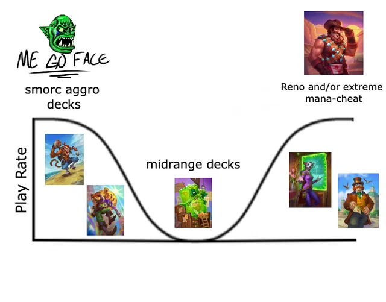

HEARTHSTONE, ¿No es lo que era?
Hearthstone, lanzado por Blizzard en 2014, fue un pilar fundamental en el mundo de los juegos de cartas digitales, atrayendo a millones de jugadores con su mezcla única de estrategia, simplicidad y el encanto del universo de Warcraft. Sin embargo, con el paso de los años, la base de jugadores ha disminuido significativamente. ¿Qué llevó al declive de este título que alguna vez dominó el género de los TCG digitales? En este artículo, analizamos las posibles causas de su caída, explorando factores como la creciente competencia, decisiones de diseño controvertidas y cambios en las tendencias de los jugadores.
Un Éxito Inicial
Hearthstone comenzó como un experimento de Blizzard para ofrecer una experiencia accesible y divertida que pudiera atraer tanto a jugadores veteranos como a aquellos que nunca habían jugado un TCG. Con reglas simples y partidas rápidas, Hearthstone rápidamente se convirtió en un juego muy popular, logrando acumular más de 30 millones de jugadores en sus primeros años.
Interfaz Amigable: La interfaz gráfica de Hearthstone era sencilla pero poderosa, perfecta para aquellos que querían iniciarse en los juegos de cartas sin las complicaciones de las reglas más avanzadas de otros TCG.
Actualizaciones Constantes: Blizzard lanzó expansiones y aventuras cada pocos meses, manteniendo el juego fresco y emocionando a la comunidad con cartas nuevas y poderosas.

El Comienzo del Declive
Con el tiempo, sin embargo, la experiencia de Hearthstone comenzó a deteriorarse. Los jugadores más veteranos notaron que el juego se volvía cada vez más dependiente del RNG (generador de números aleatorios), lo que añadía un elemento de suerte excesivo que resultaba frustrante. Además, Blizzard tomó varias decisiones de diseño que no fueron bien recibidas:
Aumento en la Complejidad: Aunque las primeras expansiones fueron bien recibidas, el constante lanzamiento de nuevas cartas y mecánicas hizo que el juego se volviera más complejo. Para los nuevos jugadores, aprender todas las mecánicas existentes se volvió abrumador.
Costos de Entrada: La necesidad de adquirir muchas cartas nuevas para mantenerse competitivo hizo que Hearthstone fuera percibido como un juego "pay-to-win", donde el éxito dependía del dinero invertido en sobres de cartas.

Competencia en el Mundo de los TCG Digitales
Otro de los factores que ha afectado a Hearthstone es la creciente competencia dentro del mundo de los juegos de cartas digitales. Títulos como Legends of Runeterra y Magic: The Gathering Arena introdujeron nuevas propuestas que ofrecían una jugabilidad más estratégica y menos dependiente de la suerte. Estos juegos también fueron menos agresivos en su modelo de monetización, ofreciendo formas justas de conseguir cartas sin necesidad de gastar grandes cantidades de dinero.
Legends of Runeterra: El juego de cartas de Riot Games ofreció una propuesta sólida, con menos RNG y más capacidad para que los jugadores diseñen sus estrategias de manera lógica y consistente.
Magic: The Gathering Arena: Magic se estableció rápidamente como el estándar para los jugadores hardcore que buscaban complejidad y profundidad, algo que Hearthstone parecía haber abandonado.
Decisiones de Diseño y Frustración de la Comunidad
Las decisiones de Blizzard no siempre resonaron bien con la comunidad. Uno de los ejemplos más claros fue la implementación de expansiones rotativas, lo cual dejaba ciertas cartas obsoletas para el formato estándar, obligando a los jugadores a comprar nuevas expansiones si querían seguir jugando de manera competitiva.
Rotación de Expansiones: Cada año, ciertas expansiones quedaban fuera del formato estándar, lo que molestaba a los jugadores que habían invertido tiempo y dinero en coleccionarlas.
Cartas Dominantes: La aparición de cartas "dominantes" en cada expansión también se volvió un problema. Muchas veces una sola carta o combinación de cartas hacía que un mazo fuera casi imposible de vencer, llevando a un metajuego poco variado.
Comunidad y Torneos
A pesar del declive, Hearthstone sigue teniendo una comunidad fiel y una escena competitiva bastante activa. Los torneos de Hearthstone, tanto a nivel oficial como organizados por la comunidad, aún atraen a jugadores y espectadores por igual.
Grandmasters: La serie Hearthstone Grandmasters sigue siendo uno de los eventos más vistos, donde los mejores jugadores del mundo compiten por fama y premios.
Torneos Comunitarios: Además de los eventos oficiales, los torneos organizados por la comunidad han mantenido a flote el espíritu competitivo del juego, especialmente en momentos en que Blizzard no ofrecía eventos importantes.
¿Hacia Dónde Va Hearthstone?
Blizzard ha intentado revitalizar el juego introduciendo nuevos modos de juego, como Battlegrounds, que es una mezcla entre un juego de cartas y un auto-battler. Este modo fue bien recibido y trajo de vuelta a algunos jugadores, pero no logró restaurar la popularidad del Hearthstone original.
Battlegrounds: Un modo innovador que mezcla estrategia con elementos de autómatas, pero que en realidad representa una experiencia distinta al juego de cartas principal.
Duelos y Misiones: También se introdujeron modos como Duelos y Misiones, que intentan dar más opciones a los jugadores que buscan una experiencia diferente.
Conclusión
Hearthstone ha tenido un viaje lleno de altos y bajos. A pesar de sus esfuerzos, Blizzard ha tenido problemas para mantener la popularidad del juego frente a la competencia, el alto costo de entrada y las decisiones de diseño que no siempre han resonado bien con la comunidad. Sin embargo, sigue siendo un juego con un lugar importante en la historia de los TCG digitales, y para muchos, sigue siendo una fuente de entretenimiento y nostalgia. Si bien el futuro de Hearthstone es incierto, está claro que el legado que ha dejado ha sido significativo, y sus innovaciones en el mundo de los TCG aún influyen en los juegos que salieron después. Solo el tiempo dirá si Blizzard logra devolverle el brillo que una vez tuvo.